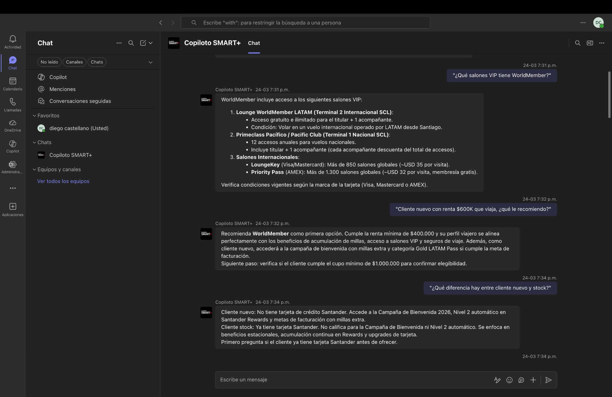

Problem first.
Lo que pasa debajo de ti
Esto no es una hipótesis. Es lo que validamos en sesiones reales con ejecutivos del canal RED.
Termolaminados que quedan guardados. PDFs que nadie vuelve a abrir. Cuando el ejecutivo necesita un dato, ya no recuerda dónde buscarlo. La información existía. Pero no estaba disponible cuando la necesitaba.
Validado en sesión real: preguntas de rutina terminan llegando a Nelson, a Javi, a Paula — y a veces a ti. No porque el dato sea complejo, sino porque no hay dónde buscarlo rápido.
La misma pregunta, dos ejecutivos, dos respuestas diferentes. Una sobrepromesa en tarjetas premium no es un error menor — en banca tiene costo reputacional concreto.
El costo real
ejecutivos en canal RED que operan hoy sin fuente de consulta centralizada
por capacitación, más termolaminados y PDFs que no se reutilizan
trazabilidad de qué información se está usando y cuál está generando errores
"Es grave entregar una información errada."
— Paula, Canal RED Manager · Sesión de validación, Marzo 2026La pregunta
No es para reemplazar capacitaciones. Es para que lo aprendido esté disponible cuando se necesita.
No es un bot para clientes. Es una herramienta interna de autoconsulta y preparación para el ejecutivo.
No inventa. Si no tiene el dato, lo dice. Prefiere la transparencia a la respuesta incorrecta.
Esto ya está funcionando.
Dato puntual — beneficios de tarjeta específica
Recomendación estratégica — perfil de cliente viajero
Fallback honesto — pregunta fuera del índice (CAE)
Manejo de objeción — mantención percibida como cara
Redacción — correo persuasivo para ejecutivo
Fíjate en la velocidad, en la precisión, y en lo que hace cuando no tiene la respuesta.

Gobernanza
Timestamp, usuario, pregunta, respuesta. Trazabilidad completa de cada interacción — no como promesa, como infraestructura ya operativa. Si alguien entrega información incorrecta, se sabe cuándo, a quién y qué decía.
Auditabilidad operativa desde el día 1.El sistema no inventa. Cuando una pregunta está fuera del alcance del índice, el bot lo señala explícitamente y sugiere escalar. No da respuestas incompletas como si fueran completas — ese es el riesgo real que se evita.
Fallback con honestidad, no con alucinación.No es perfecto. Pero es gobernable, y eso es lo que permite mejorarlo con confianza.
La propuesta
ejecutivos
Canal RED seleccionados por Paula o Javi. No toda la organización — un grupo controlado.
días
Tiempo suficiente para generar datos reales de uso. No tan largo que requiera una aprobación mayor.
riesgo técnico
El bot ya está construido y validado. El costo de activar el piloto es casi cero.
"Si en 30 días no mueve ninguna aguja, lo apagamos. ¿Qué pierdes?"
La decisión
El piloto está listo.
El bot funciona.
La evidencia existe.
Lo que necesitamos de ti
Autorización para correr el piloto con 10 ejecutivos del canal RED durante 30 días.
Si en 30 días se cumple esto:
Los ejecutivos lo usan sin necesitar soporte.
Las respuestas son correctas según criterio de Paula.
Al menos un ejecutivo dice que le ahorró tiempo.
→ escalamos a toda la gerencia MDP.
Menos fricción para responder.
Más seguridad para vender.